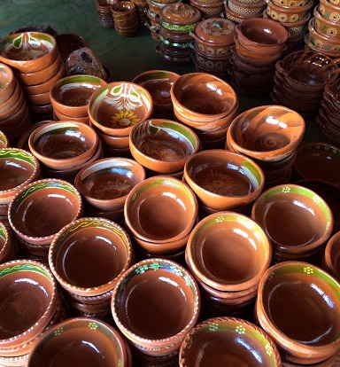
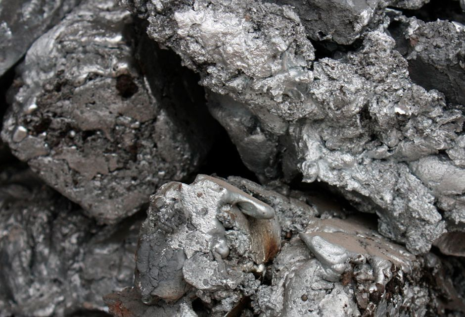

Gold
Mexico has been a top gold-producing country for many years, and in 2018 its gold output for the year fell slightly to come in at 118.4 metric tons.

Lead
Mexico is the sixth largest lead-producing country in the world, and 40% of its production is used locally in different industrial processes that cause lead contamination of the environment.

Zinc
Mexico was the world's sixth biggest zinc miner in 2018 with the US Geological Survey estimating output of 650,000t, down from 674,000t the previous year.